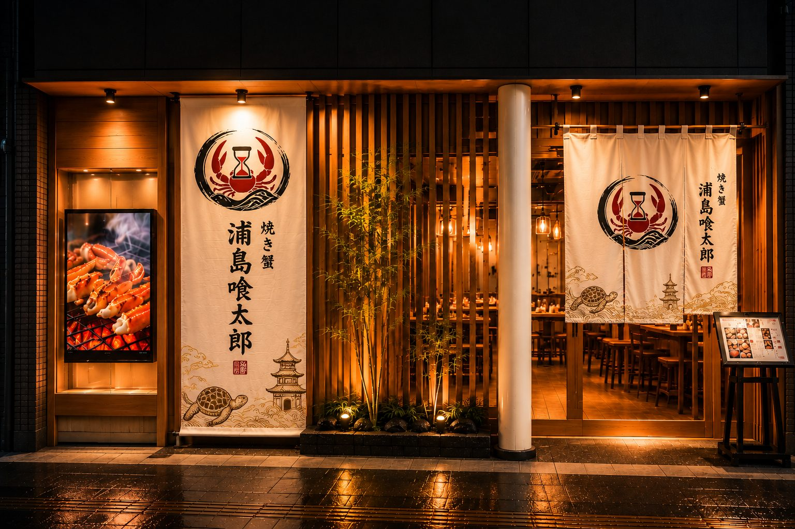
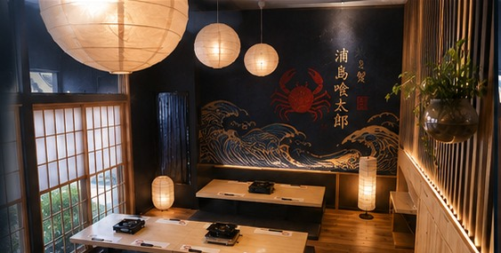

焼き蟹 ｜ 浦島喰太郎
城崎温泉・木屋町小路
2026年11月14日（土） 開業予定
誰もが知る浦島伝説——亀、波、そして竜宮城。
そのストーリーをデザインの核に据えながら、主役である「焼き蟹」の力強さと掛け合わせました。
ふらっと入れて、一歩踏み入れれば熱気に満ちている。
席についたら、まずは陶板の蓋を開けるところから。
温泉街の「湯けむり」と浦島伝説を重ね合わせて、勢いよく立ちのぼる磯の湯気で「玉手箱を開けた瞬間」を再現します。
そして締めのデザートでは、ドライアイスの白煙が再びあの瞬間を！
蓋が開いた瞬間の歓声も、ふんわりと広がる磯の香りも、ぜんぶ込みでこの店の味。
思わずカメラを向けたくなるようなひと幕を、お食事の最初と最後とに二度、お届けします。


ご年配の方にも、お子様連れにも、海外からのお客様にも。
座敷ではなく全席テーブル・椅子席なので、旅の途中に気軽に立ち寄っていただけます。
肩肘張らずにくつろげる、和モダンの設えでお迎えします。
城崎の一日の流れに合わせて、2つの時間帯でお迎えします。メリハリのある運営で、年間を通して安定したサービス品質をお約束します。
11:30 – 14:30LUNCH
お昼の温泉街散策や、到着直後の日帰り観光のお客様に。
17:30 – 21:00DINNER
素泊まりのお客様、海外からのお客様の「日本食・蟹体験」に。
※ 定休日は火曜日です。営業時間・定休日は変更となる場合があります。
本ページに掲載している店名・内容・写真・価格・営業時間は、開業準備段階の計画内容です。写真の一部はイメージであり、実際の提供内容と異なる場合があります。内容は今後変更となることがあります。